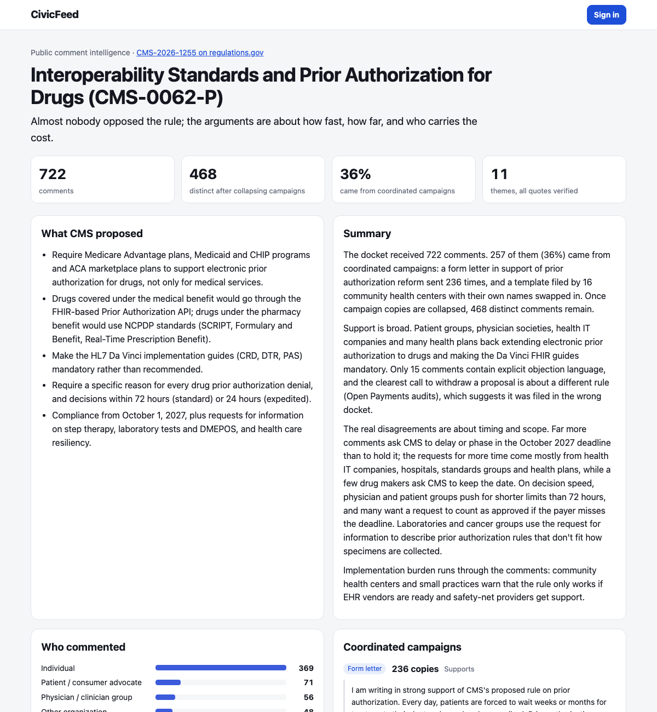

Policy analysis · AI with verification
CivicFeed
What 722 public comments said about CMS's interoperability and prior authorization for drugs rule: campaigns, who commented, the themes, and where commenters disagree.
- Found that 36% of comments came from two campaigns, including a template filed by 16 health centers under their own names.
- Rules and clustering in code; AI labels themes and picks quotes, and every quote is checked word for word before publishing.
- Supabase Auth with row-level security for private notes.
Pythonscikit-learnClaudeSupabase Authregulations.gov